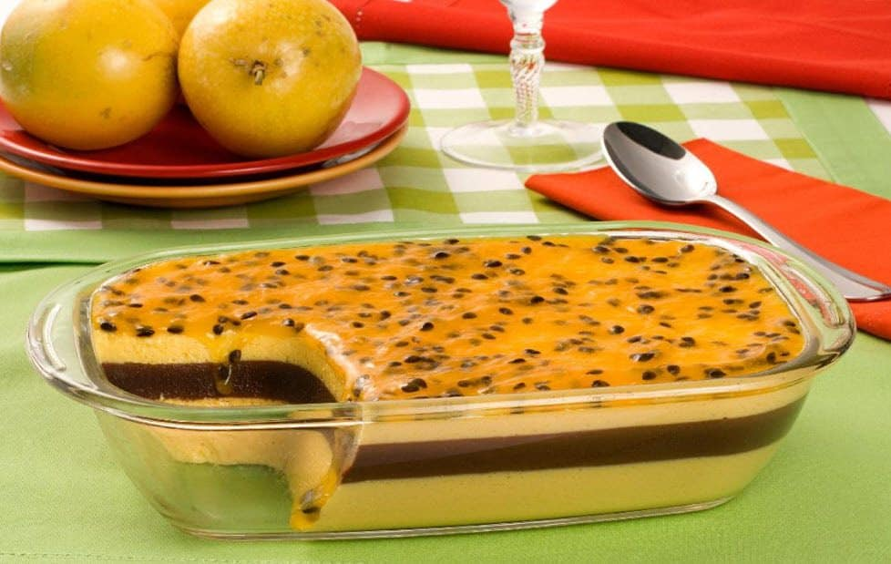
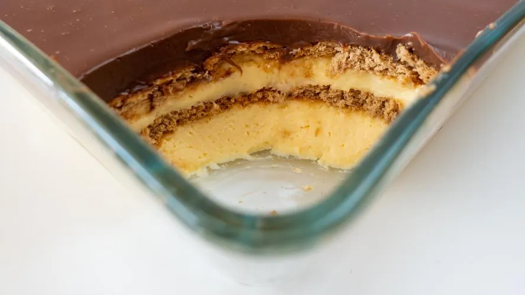
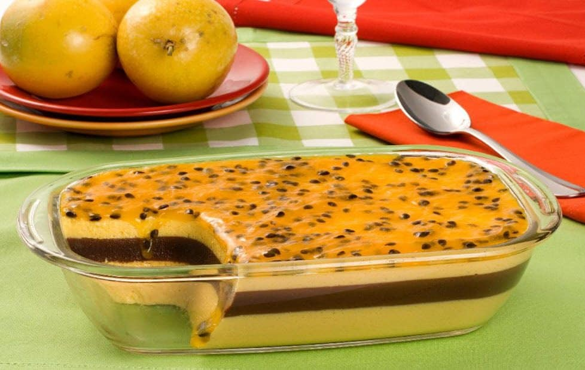
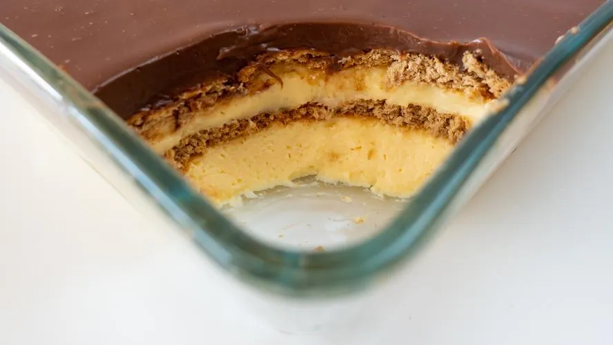

Doces Incríveis
Explore uma variedade de doces deliciosos.
 



Ingredientes
Massa
3 unidade(s) ovo
1 1/2 xícara(s) de leite
2 xícara(s) de farinha de trigo
2 xícara(s) de açúcar
1 xícara(s) de chocolate em pó
1 colher(es) de sopa de fermento
Cobertura
1 caixinha(s) de creme de leite
2 barra(s) de chocolate
Modo de preparo:
Bata os ovos, o óleo e o leite no fouet, liquidificador ou batedeira. Em seguida, acrescente os ingredientes secos e misture bem. Coloque a massa em uma forma untada e leve ao forno a 180°C por 45 minutos ou até furar com o palito e sair sequinho. Enquanto isso, derreta o chocolate em banho-maria e misture bem com o creme de leite para a cobertura.
Mousse de Maracujá
Ingredientes
Mousse:
- 2 envelopes de gelatina em pó sem sabor
- 1 colher de chá de corante alimentício amarelo
- 2 xícaras de chá de suco de maracujá
- 2 latas de leite condensado
- 3 latas de creme de leite
- 1kg de chocolate ao leite derretido
Cobertura:
- Polpa de 3 maracujás
- 1 xícara de chá de água
- 1 xícara de chá de açúcar
- 1/2 colher de sopa de maisena
- 1 colher de sopa de glucose de milho tipo Karo
Modo de Preparo
- Polvilhe a gelatina no suco de maracujá, dissolva em banho-maria e bata no liquidificador com o corante, o leite condensado e 2 latas de creme de leite e reserve na geladeira por 30 minutos.
- Em uma tigela, misture o chocolate derretido e o creme de leite restante e reserve.
- Em um refratário grande, intercale camadas de creme de maracujá e de creme de chocolate, terminando em creme de maracujá.
- Leve à geladeira por 3 horas.
- Para a cobertura, em uma panela, coloque os ingredientes, menos a glucose e leve ao fogo médio, mexendo até cozinhar e engrossar.
- Retire do fogo, acrescente a glucose e misture com uma colher.
- Deixe esfriar, espalhe sobre a mousse e sirva.
Pavê de Chocolate
Ingredientes (8 porções)
Biscoito Maisena:
- 1 pacote de bolacha maisena
- 1/2 copo de leite
- 1 colher (sobremesa) de chocolate em pó
Creme Branco:
- 1 lata de leite condensado
- 1 lata de leite de vaca (use a medida da lata de leite condensado)
- 1 colher (sobremesa) de amido de milho
- 2 gemas
Creme de Chocolate:
- 1 lata de leite condensado
- 1 lata de leite de vaca (use a medida da lata de leite condensado)
- 1 colher (sobremesa) de amido de milho
- 2 gemas
- 4 colheres de chocolate em pó
Cobertura:
- 4 claras
- 4 colheres de açúcar
- 1 lata de creme de leite sem soro